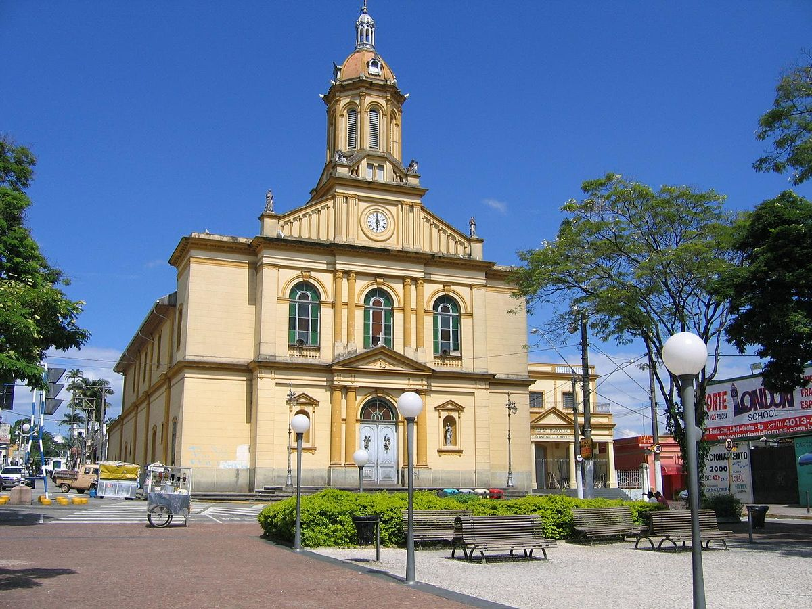
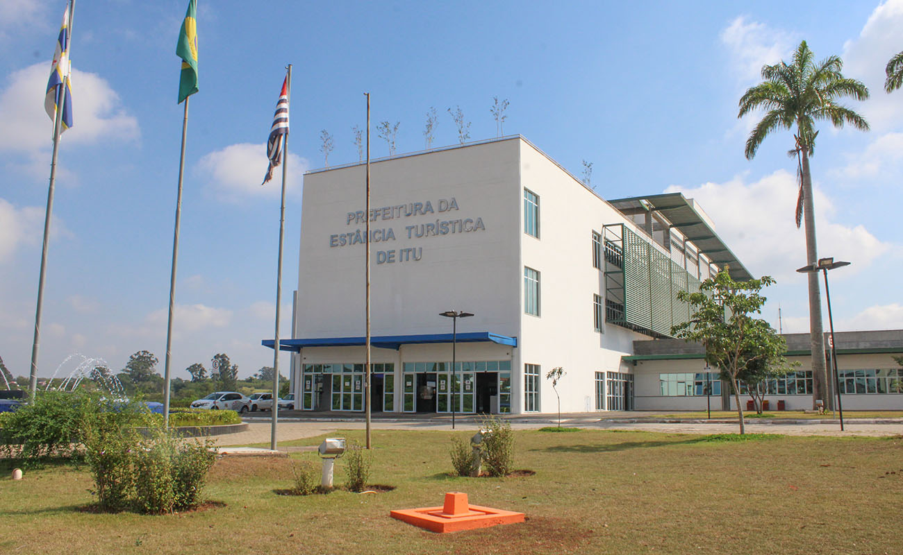
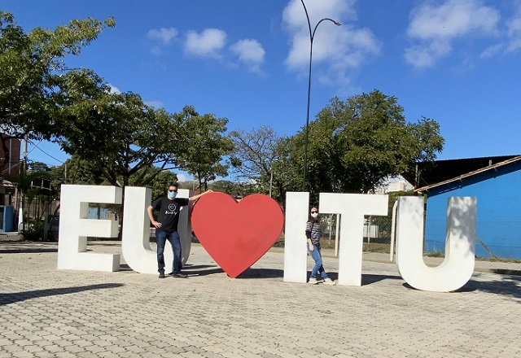

O nome “Utu-Guaçu”, que futuramente tornou-se Itu, significava “grande queda dágua”. A mesma cachoeira que deu o nome para Itu está no Rio Tietê e inspirou também o nome da cidade vizinha, Salto.
A Vila de Itu foi, em fevereiro de 1842, elevada à categoria de cidade e, no mesmo ano, participou ativamente da revolução liberal que eclodiu em várias partes do país, organizando uma força de 300 homens, junto à tropa de Brigadeiro Rafael Tobias de Aguiar.
A participação de Itu na política Nacional teve também grande destaque na Magna Convenção do Partido Republicano em 1873, nela realizada. O desenvolvimento econômico deu-lhe a condição de maior produtora de cana de açúcar durante o período Imperial. Também teve destaque no ciclo do café, que foi a atividade base do município até 1935, estimulando a vinda de imigrantes, em especial, italianos.
Em 1869, instalou-se a primeira fábrica de tecidos de algodão, sendo a primeira movida a vapor da Província de São Paulo. Mas foi só a partir de 1950, que várias fábricas começaram a se instalar na cidade.
Também nessa época, ocorreu grande migração rural em busca de trabalho. Em 1968, com a conclusão da rodovia Castelo Branco, novas empresas instalaram-se em Itu, principalmente às margens de suas estradas de acesso.
Com um imenso potencial turístico, graças seu inestimável patrimônio histórico, cultural, religioso, ambiental e arquitetônico, Itu também é conhecida como “terra dos exageros”, em razão do saudoso humorista ituano Francisco Flaviano de Almeida, o Simplício.
Hoje a cidade possui um perfil misto, unindo turismo, comércio, prestação de serviços e indústrias. Sobre este último setor de atividade econômica, o município está implantando atualmente um distrito industrial em área de um milhão de metros quadrados, na região do Pirapitingui.
  
Dados Gerais Tipologia: mista (atividade turística, comercial e industrial) Gentílico: ituano População estimada: 170.157 (estimativa IBGE 2017)
DDD: (11) Área: 642 Km² Altitude: 583m CEP: 133000-000
Feriados Municipais 2 de Fevereiro, Dia da Padroeira e Dia da Cidade; Sexta-Feira Santa Corpus Christi 20 de Novembro (Dia da Consciência Negra)
Dados Geográficos Clima: Tropical / Bioma: Mata Atlântica. Relevo: Situa-se entre o planalto cristalino e o sedimentar. Possui vestígios de cidade arqueozóica. Relevo de colina suave e nas regiões limítrofes algumas altitudes. Banhada pelo Rio Tietê e alguns outros de menor extensão como o Itaim Mirim, Itaim Guaçu e Braiaiá.
Distâncias (km): Salto – 08 Porto Feliz – 20 Sorocaba – 39 Campinas – 47 Jundiaí – 49 São Paulo – 101